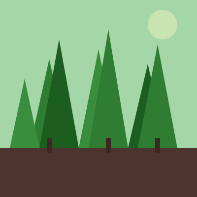
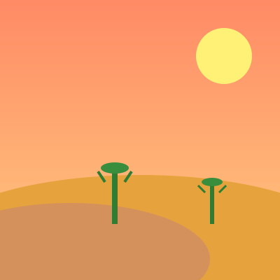
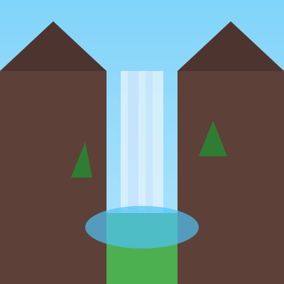
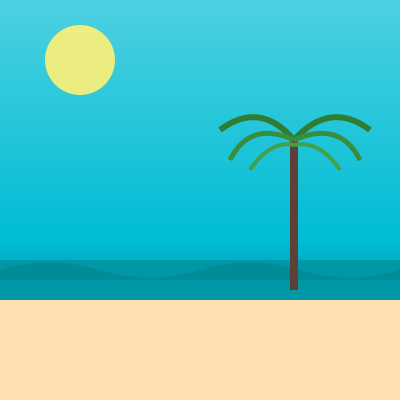

From fiery sunsets over mountain ridges to the calm rhythm of ocean waves, the natural world offers endless beauty worth exploring. This gallery showcases nine breathtaking landscapes that remind us why stepping outside and experiencing nature firsthand is so important.
Whether you are drawn to the vibrant green canopies of dense forests, the stark beauty of wind-sculpted deserts, or the magical glow of the northern lights, each scene captures a unique moment of wonder. Explore these destinations and find your next great adventure.



